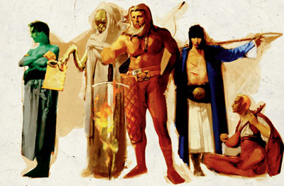
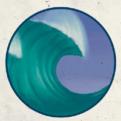

依斯提悉亚 Istishia（水元素之神）

（左一）
费伦神系 强大神力
别称：水之王 The Water Lord，水元素之王 King of the Water Elementals
圣徽：翻腾的浪涛

居住界域：水元素界 Elemental Plane of Water
阵营：绝对中立 N
神职：水元素 Elemental Water，以水净化 Purification
信徒：吟游诗人，元素使者（水），水手，旅行者
牧师阵营：中立善良 NG，守序中立LN，绝对中立 N，混乱中立 CN，中立邪恶 NE
神域：毁灭 Destruction，海洋 Ocean，风暴 Strom，旅行 Travel，水 Water
喜好武器：浪涛（战锤）Wave（warhammer）
依斯提悉亚是基本元素之一－水的具体化身。祂是费伦大陆上的四大元素神之一，与其它元素神祇相同，祂的信徒数量并不多（在这点上卡署斯是个例外）。祂对自己的信徒并不十分重视，凡人们唯一所能理解的，就是祂的高深莫测与难以理解。祂代表着水的基础本质、在漫长时间中转变缓慢的特性、以及水改变万物的能力。大多数人都无法理解祂那难以常理解释的行动；此外，祂与其它的元素之王一样，都不重视自己的信徒。
依斯提悉雅的教会分成数个不同的教派，但 彼此间会共同合作以完成各个水元素信仰中的不同愿景。有许多新的教派不断出现，随即又被其它教派吸收。各个不同教派间都采用统一的阶级划分系统，因此即便是不同教派的成员也能辨识彼此的的阶级高低。大多数的神职人员都专属于某一特定的神殿或地区，但因他们相信在同一地点停留过久会造成淤塞与停滞，因此每五 年就会进行一次更动。牧师们致力于保护水源免受污染，并为陆上与水中的种族担当仲裁调解一职。水元素之王的神殿以制作精良的陶器而著名于世。
依 斯提悉亚的牧师在黎明时饮水，对水元素之王献上感谢，随后进行祈祷以获得神术。教会在一年中的「大潮」（spring tide）与「小潮」（neap tide）两天举行庆典，仪式包括将新进信徒投入水中，然后其它信徒也会纷纷一同跃入。地表神殿与水中圣坛的所属信徒们也常在庆典时互相拜访。依斯提悉亚的牧师常兼职吟游诗人，或进阶成为元素使者（Elemental Archon）。
历史/与众神的关系 History/Relationship：
依 斯提悉亚是四大元素神祇之一，祂似乎超然于时间之上，在漫长的历史中一直未曾改变。祂和其它与水元素有关的神祇－比如深海˙赛悉拉（Deep Sashelas，海精灵之神）、埃达丝（Eldath）、维尔寇（Valkur）、以及安博里（Umberlee）－略有往来，但关系也不甚密切。祂总是尽一切力量反抗毁灭成性的卡署斯。
教义 Dogma：
万事万物都在互相联系的循环之内，而水则永远是至高的元素－土会 溶解在水中；火会被水浇灭；而大气则会凝聚为云，之后化为雨水－如此则成为永恒不变的大循环。水元素之王是众元素之间的平衡者与调节者，接受改变却仍可保有自身的本质。人不应违反本性，去尝试成为自己永不可能成为之事物；相反地，应当顺应自己的本质，并将此「顺应自身长处」的教导传播到世界各处。为人处世 应当柔和、能屈能伸，但千万不可放弃原则。一如雨水自大地的凹缝向下流入海中，而非往山上行，依斯提悉亚的真理也会在世上顺其自然地流传（而不是透过粗鄙的蛮力）。生命的奥秘神秘难解又令人乐在其中，但须了解－有些答案不会在这个世界中显现，而是位于下一个世界之中；亦须明了－生命的循环亦反映出命运的循 环，会因你过去或未来的行动而收取代价、或给予报偿。
--
资料来源：费伦大陆信仰与神系《Faiths & Pantheons》
译者：一凡